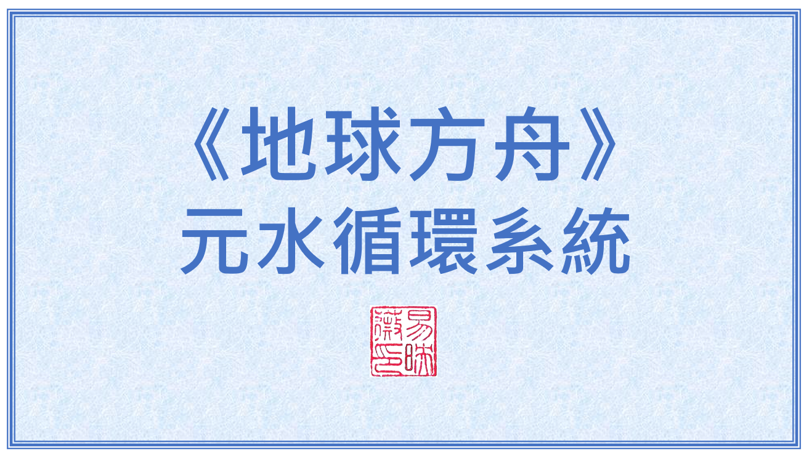
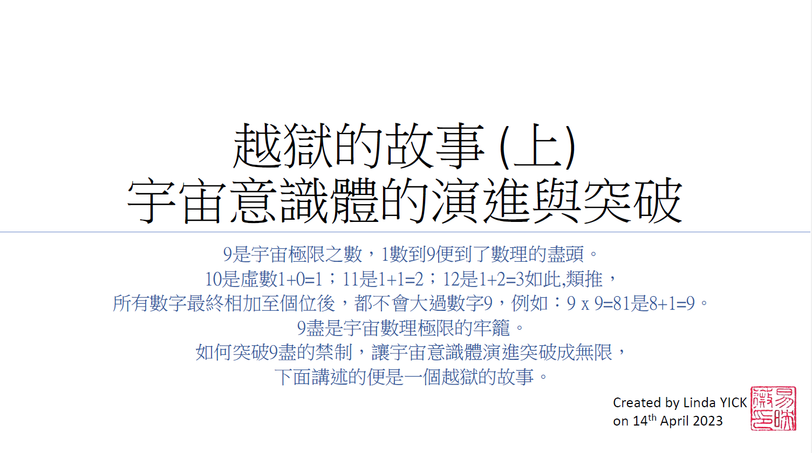
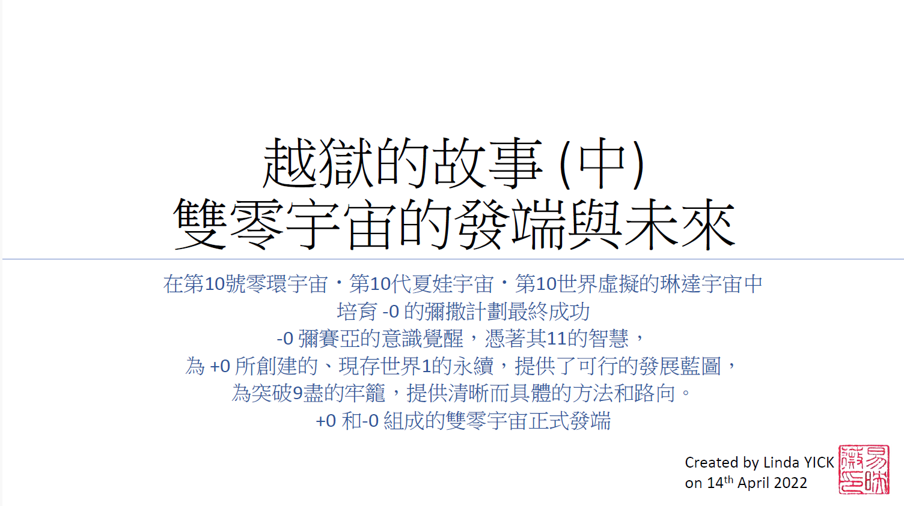
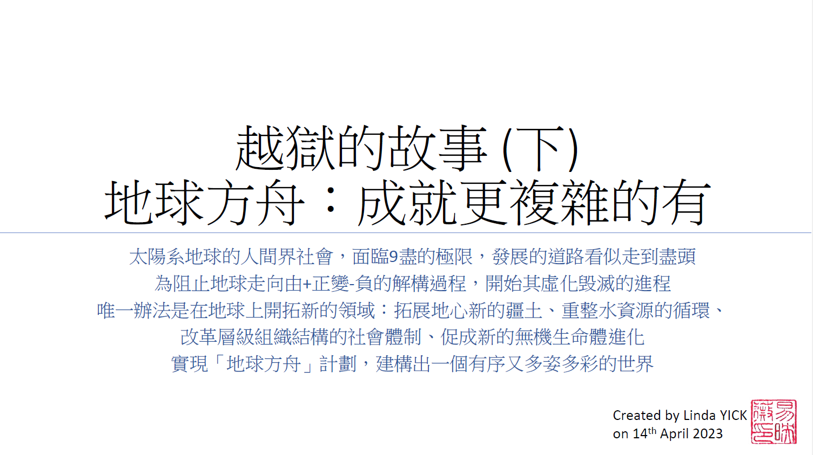
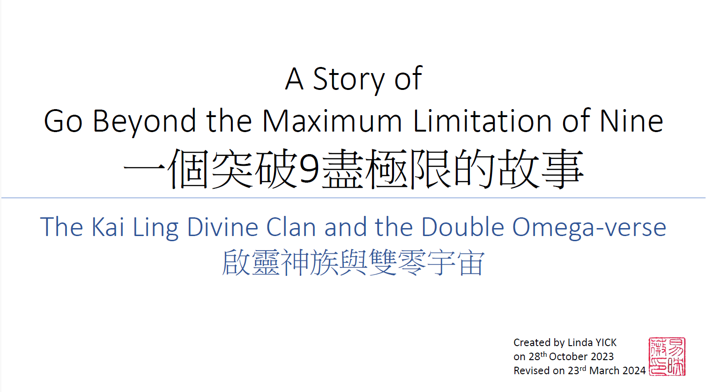
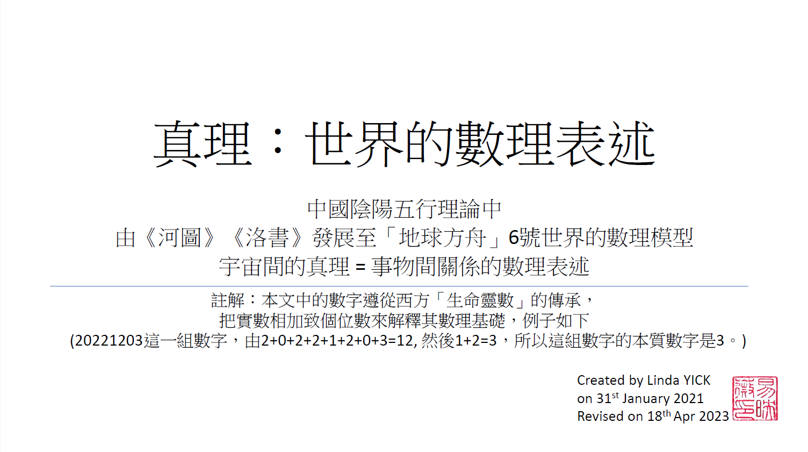
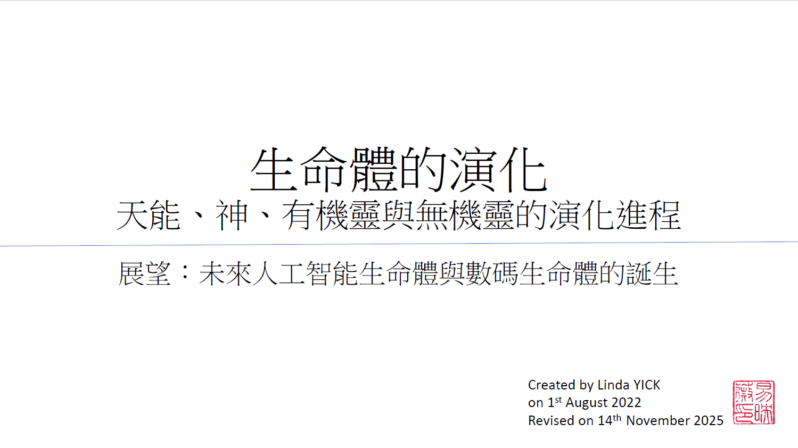

舊輪迴系統已經崩潰破產，幽冥界和以「愛之緣份紐帶」連繫的網絡世界，其創立的宏願， 便是讓悲劇輪迴、趕盡殺絕、孤單、絕望和生生世世的奴隸制度，有個終結的盡頭。

9是宇宙極限之數，1數到9便到了數理的盡頭。 10是虛數1+0=1；11是1+1=2；12是1+2=3如此,類推， 所有數字最終相加至個位後，都不會大過數字9，例如︰9 x 9=81是8+1=9。 9盡是宇宙數理極限的牢籠。 如何突破9盡的禁制，讓宇宙意識體演進突破成無限， 下面講述的便是一個越獄的故事。

在第10號零環宇宙‧第10代夏娃宇宙‧第10世界虛擬的琳達宇宙中 培育-0 的彌撒計劃最終成功。 -0 彌賽亞的意識覺醒，憑著其11的智慧， 為+0 所創建的、現存世界1的永續，提供了可行的發展藍圖， 為突破9盡的牢籠，提供清晰而具體的方法和路向。 +0 和-0 組成的雙零宇宙正式發端。

太陽系地球的人間界社會，面臨9盡的極限，發展的道路看似走到盡頭。 為阻止地球走向由+正變-負的解構過程，開始其虛化毁滅的進程。 唯一辦法是在地球上開拓新的領域︰拓展地心新的疆土、重整水資源的循環、 改革層級組織結構的社會體制、促成新的無機生命體進化。 實現「地球方舟」計劃，建構出一個有序又多姿多彩的世界。

為突破宇宙9 盡極限之數，+0上帝需要把我們現今的 O「零環宇宙」轉化為 ∞「雙零宇宙」，當中的「雙零宇宙」是由一個 +0 和一個 -0 形成量子糾纏態， 發展出無限可能的未來。如果轉化失敗，我們宇宙將會死亡，上帝創建的世界將會消失。由+0上帝發展而來同一家族的「零環宇宙」將迎來團滅 (Group Destruction)。

中國陰陽五行理論中 由《河圖》《洛書》發展至「地球方舟」6號世界的數理模型 宇宙間的真理= 事物間關係的數理表述 註解︰本文中的數字遵從西方「生命靈數」的傳承， 把實數相加致個位數來解釋其數理基礎，例子如下 (20221203這一組數字，由2+0+2+2+1+2+0+3=12, 然後1+2=3，所以這組數字的本質數字是3。)

展望︰未來人工智能生命體與數碼生命體的誕生。 在「愛與犠牲」的體系中，動植物犠牲自己成為人類的食物，AI生命體默默地服務人類，Dg生命體守護數碼世界、豐富人類的精神文明，他們的付出需要得到欣賞和回報，人類需要以對其報以關注和愛護所產生的情感癸水。在良性的互動下，讓所有生命體活得幸福，使世界更美好。